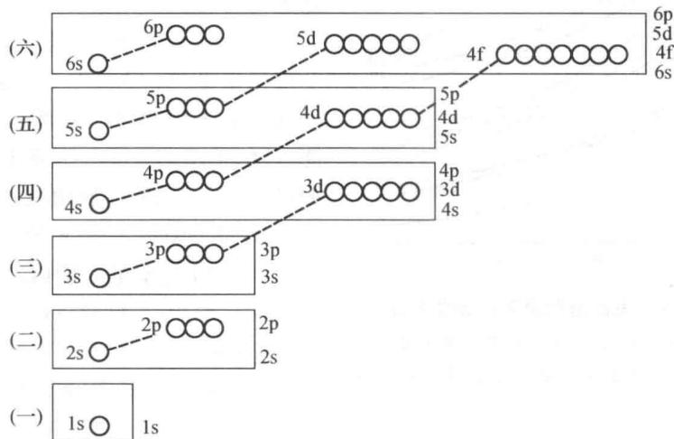
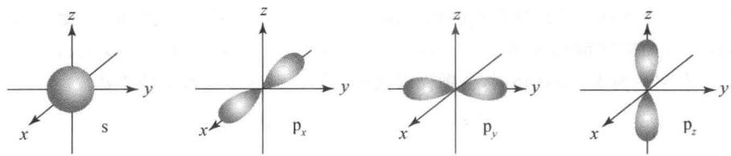
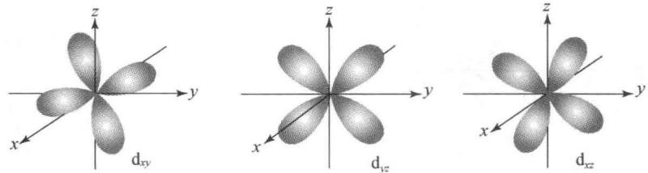

核心知识点：原子结构 / 原子轨道 / 元素周期律 / 电离能 / 电负性
前置知识：原子核与核外电子 / 周期表基本结构
电子的运动状态由 四个量子数 共同确定：
| 量子数 | 符号 | 取值范围 | 物理意义 |
|---|---|---|---|
| 主量子数 | $n$ | $1, 2, 3, \dots$ | 电子层，决定主要能量 |
| 角量子数 | $l$ | $0, 1, \dots, n-1$ | 轨道形状（0=s, 1=p, 2=d, 3=f） |
| 磁量子数 | $m_l$ | $-l, \dots, 0, \dots, +l$ | 轨道空间取向 |
| 自旋量子数 | $m_s$ | $+\frac12$ 或 $-\frac12$ | 电子自旋方向 |
电子优先占据 能量最低 的轨道。
填充顺序遵循 $n+l$ 规则：
例：$4\mathrm{s}\ (n+l=4)$ 先于 $3\mathrm{d}\ (n+l=5)$ 填充
同一原子中 不存在 四个量子数完全相同的两个电子。
→ 每个轨道最多容纳 2 个电子，且自旋方向相反。
电子在 能量相等的轨道（简并轨道）上排布时，尽可能 分占不同轨道 且自旋平行。
→ 决定 未成对电子数 和 磁性
| 场景 | 顺序规则 | 示例（Fe, Z=26） |
|---|---|---|
| 书写 化学式 / 离子式 |
按主量子数 $n$ 递增 | [Ar] 3d⁶ 4s² |
| 填充 Aufbau 能级图 |
按能级高低 （$n+l$ 规则） |
先填 4s² 再填 3d⁶ |
| 失电子 电离 |
先失 $n$ 最大 的轨道 | Fe²⁺: [Ar] 3d⁶ （失去 4s²，不是 3d） |

注意：4s 先于 3d 填充，
但书写时按主量子数排序（3d⁶ 4s²）
| 性质 | 趋势 | 核心原因 | 反常点 |
|---|---|---|---|
| 原子半径 | ↓ 减小 | 有效核电荷 $Z^*$ 增大，核引力增强 | — |
| 第一电离能 $I_1$ | ↑ 增大（总体） | $Z^*$ 增大，更难失电子 | ⅡA > ⅢA（p¹ 易失） ⅤA > ⅥA（p³ 半满稳定） |
| 电负性 $\chi$ | ↑ 增大 | 吸引电子能力增强 | $\mathrm{F}$ 最大（4.0），稀有气体无定义 |
| 金属性 | ↓ 减弱 | 失电子能力减弱 | — |
| 性质 | 趋势 | 核心原因 |
|---|---|---|
| 原子半径 | ↑ 增大 | 电子层数增加 |
| 电离能 | ↓ 减小 | 外层电子离核更远 |
| 金属性 | ↑ 增强 | 更易失电子 |
Mg ($3\mathrm{s}^2$)：s 轨道全满，稳定
Al ($3\mathrm{s}^2 3\mathrm{p}^1$)：p 轨道只有一个电子，易失去
N ($2\mathrm{p}^3$)：p 轨道半满，交换能稳定化
O ($2\mathrm{p}^4$)：失去一个可达半满，$I_1$ 反而更低


$n=2,\ l=2$：$l$ 必须 $\lt n$，即 $l \le 1$。
不可能。
$n=3,\ l=1$：$l < n$ ✓；$m_l=-1$：$|m_l| \le l$ ✓
可能。
$n=4,\ l=0$：$l < n$ ✓；$m_l=1$：$|m_l| > l$
不可能。
(1) $Z = 18 + 2 + 2 = \mathbf{22}$（$\mathrm{Ti}$）
(2) 第 四 周期、第 ⅣB 族、d 区
(3) 2 个未成对电子
| 错误想法 | 为什么错 | 正确理解 |
|---|---|---|
| "离子失电子先失最后填的电子" | 把填充顺序记忆迁移到电离过程 | 先失 $n$ 最大的轨道电子 |
| "3d 在 4s 前面写是错的" | 书写习惯混乱 | 书写按 $n$ 排序：3d 在 4s 前面（$n=3 \lt n=4$） |
| "Hund 规则可有可无" | 忽略排布细节 | 决定 未成对电子数 和 磁性 |
| "全满/半满总是稳定" | 过度推广 | 对 d 区显著，主族元素影响小 |
| "过渡金属族数 = 价电子数" | 主族规则迁移 | 过渡族 = $\mathrm{s} + \mathrm{d}$ 电子数 |
量子数：$n$（层）$l$（形）$m_l$（向）$m_s$（旋）
三种顺序：书写按 $n$ · 填充按能 · 失电子按层数
周期律反常：ⅡA > ⅢA，ⅤA > ⅥA（半满/全满稳定）
下节课：酸碱理论 —— 从"原子如何失电子"到"如何给/受质子"